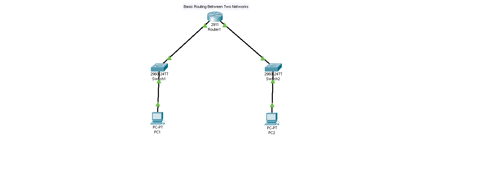
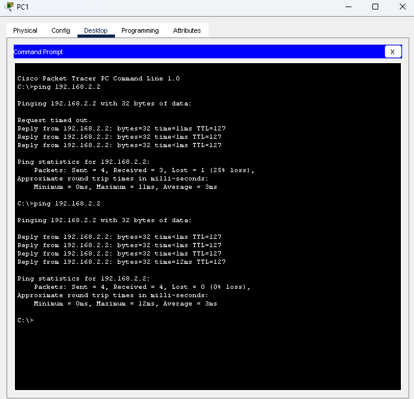

Basic Routing Between Two Networks
This project demonstrates how a router enables communication between two different IP networks. Static routing configuration was used to allow devices in separate networks to exchange packets successfully.
The network consists of:
Topology Diagram:

Router(config)# interface g0/0 Router(config-if)# ip address 192.168.1.1 255.255.255.0 Router(config-if)# no shutdown Router(config)# interface g0/1 Router(config-if)# ip address 192.168.2.1 255.255.255.0 Router(config-if)# no shutdown
Ping tests were performed between PC1 and PC2 to verify successful routing between the two networks.
Ping Result:

The experiment confirmed that routers enable communication between separate IP networks. Proper IP addressing and interface configuration are essential for successful packet forwarding.